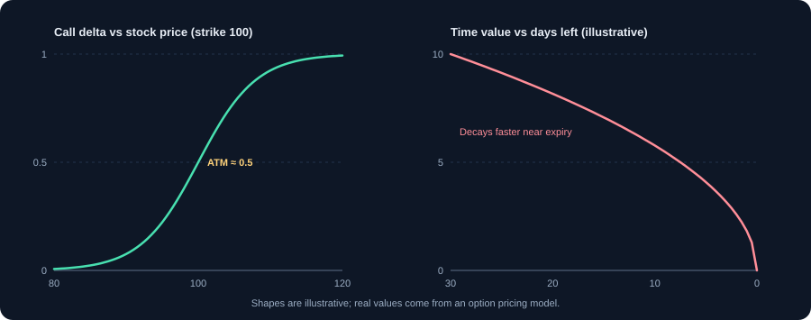
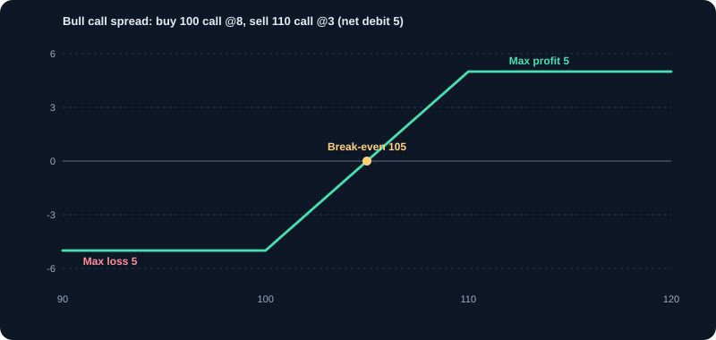

Option Greeks & Strategies
Measure how option prices respond to price, time and volatility, and build defined-risk strategies.
1. What the Greeks measure
The Greeks are sensitivities: how much an option's price changes when one input changes. They come from pricing models and are estimates that move as the market moves. Learning them turns vague feelings ('the option should rise') into measurable exposures. The main inputs are the underlying price, time to expiry, implied volatility and interest rates.
2. Delta: sensitivity to the price
Delta is the change in option price for a ₹1 change in the underlying. Call deltas run from 0 to 1, and put deltas from −1 to 0. An at-the-money option has delta near 0.5 for calls. Delta also approximates the probability the option expires in the money, which is a useful rough guide.
Example: a call with delta 0.6 gains about ₹60 per unit if the underlying rises ₹100 (0.6 × 100). If the underlying falls ₹100, it loses about ₹60. Delta changes as the price moves, so the estimate is only good for small moves.
3. Gamma: how fast delta changes
Gamma is the rate of change of delta. It is highest for at-the-money options close to expiry. High gamma means small price moves can change your exposure quickly. Option buyers have positive gamma and benefit from large moves. Option sellers have negative gamma and are hurt by large moves, which is why sellers need hedging discipline.
4. Theta: the cost of time
Theta is the daily decline in an option's time value, all else equal. Option buyers pay theta; sellers collect it. Theta is largest for at-the-money options near expiry, which is why short-dated options can lose value quickly even when the underlying does not move.
Example: an option priced at ₹100 with theta −5 per day. After two days, all else equal, it is about ₹90. The decay is not linear; it speeds up near expiry.
5. Vega and implied volatility
Vega is the change in option price for a 1 percentage point change in implied volatility (IV). IV is the volatility implied by the option's price. When uncertainty rises, IV rises and options get more expensive. Before results, budgets and elections, IV often rises. After the event, IV often falls sharply, which is called IV crush.
Example: vega 8, IV rises 2 points: the option gains about ₹16 per unit even if the underlying does not move. If IV then falls 4 points after results, the option can lose value even if the stock moves in the expected direction.
6. Rho: interest rates
Rho measures sensitivity to interest rates. For short-dated options it is usually small and often ignored by beginners. It matters more for long-dated options and in periods of rate changes.
7. Using the Greeks together
No single Greek explains the position. A practical checklist: delta tells you the direction exposure; theta tells you the daily cost or income; vega tells you how exposed you are to a change in uncertainty; gamma tells you how the exposure will change as price moves. Before any trade, write down the Greeks and what would make them change.
8. Defined-risk strategies
A defined-risk strategy limits both maximum loss and maximum profit. Spreads do this by buying one option and selling another. They reduce cost and reduce the impact of volatility changes.
- Bull call spread: buy a lower-strike call and sell a higher-strike call with the same expiry. Profits if the price rises moderately.
- Bear put spread: buy a higher-strike put and sell a lower-strike put. Profits if the price falls moderately.
- Iron condor: sell an out-of-the-money put spread and an out-of-the-money call spread. Profits if the price stays in a range. Limited profit, limited loss.
9. Worked example: bull call spread
Buy a 24,000 call at ₹200 premium and sell a 24,500 call at ₹80 premium. Net debit ₹120. Maximum profit = 500 − 120 = ₹380 per unit. Maximum loss = ₹120 per unit. Break-even = 24,000 + 120 = 24,120. Both risk and reward are fixed before entry. The trade is a view that the index rises to around 24,500 by expiry, with the loss capped if it does not.
10. Volatility as a trade
Some traders trade volatility itself: buying options when IV is low and expected to rise, or selling when IV is high and expected to fall. Compare current IV with its historical range to judge whether options are cheap or expensive. A high IV is not a reason to sell on its own, because high volatility often comes with large moves.
11. Practical cautions
- Model estimates depend on inputs. Check your broker's calculator and understand its assumptions.
- Liquidity matters. Wide bid-ask spreads make Greeks hard to trust and exits expensive.
- Time decay is relentless for buyers. A correct view can still lose money if the move is too slow.
- Expiry week changes gamma and theta sharply. Know your exposure before the final days.
- Paper-trade a strategy before risking money, and keep a record of the Greeks at entry and exit.
12. Common Greeks mistakes
- Buying options only because they look cheap, ignoring theta.
- Ignoring IV when buying before results.
- Selling naked options without understanding gamma risk.
- Assuming delta stays the same as the price moves.
- Using the Greeks without knowing the expiry date and strike.
Charts and visuals


Worked examples
Delta in action
A call with delta 0.6 gains about 0.6 × 100 = ₹60 per unit if the underlying rises 100 points. Delta is an estimate that changes as the price moves.
Theta decay
An option is priced at 100 with theta of −5 per day. After two days, all else equal, it is about 90. Time works against option buyers and in favour of option sellers.
Vega and implied volatility
Vega is 8. If implied volatility rises 2 points, the option gains about 8 × 2 = ₹16 per unit, even if the underlying does not move. This is why options often get more expensive before results.
Bull call spread
Buy a 24,000 call at ₹200 and sell a 24,500 call at ₹80. Net debit = ₹120. Maximum profit = 500 − 120 = ₹380. Maximum loss = ₹120. Break-even = 24,000 + 120 = 24,120. Both risk and reward are fixed in advance.
Real-life scenarios
IV crush after results
You buy calls before results when implied volatility is high. The result is in line, and IV falls sharply. The option loses value even though the stock rose a little. Vega losses can exceed directional gains.
Weekend time decay
Options lose time value over the weekend even though the market is closed. Option sellers collect theta, but must manage the risk of a large move.
Use cases
- Choosing between a naked call and a bull call spread to reduce cost and risk.
- Using delta to estimate how a portfolio of options moves with the market.
- Selling iron condors in a range-bound market with defined maximum loss.
Key takeaways
- Delta = price sensitivity; gamma = how delta changes; theta = time decay; vega = volatility sensitivity.
- Check implied volatility before buying options.
- Defined-risk spreads cap both maximum loss and maximum gain.
- Greeks are estimates from a model; verify with your broker's calculator.
Key terms, explained
- Greeks (delta, theta)
- Measures of option sensitivity. Delta measures price sensitivity; theta measures time decay.
- Implied volatility (IV)
- The volatility the option price implies for the future. Higher IV makes options more expensive.
- Premium
- The price paid by the option buyer to the seller.
- Expiry
- The date on which a futures or option contract ends.
- Strike price
- The price at which an option can be exercised.
- Option
- A contract giving the buyer the right, but not the obligation, to buy (call) or sell (put) at a set price before expiry.
Questions learners ask
Which Greek matters most?
It depends on the trade. Delta matters for direction, theta for time decay, and vega for volatility. Beginners should understand delta and theta first.
Why did my option lose value even though the stock rose?
Time decay (theta) or a fall in implied volatility (vega) can outweigh a small rise in the stock. This often happens after results or events when volatility drops.
Is time decay good for option buyers?
No. Theta works against buyers because the option loses time value each day. It works for sellers, who collect that decay but take on larger risk.
Educational content only, not investment advice. Markets carry risk, including loss of capital. Examples are simplified and may exclude charges, taxes and slippage.